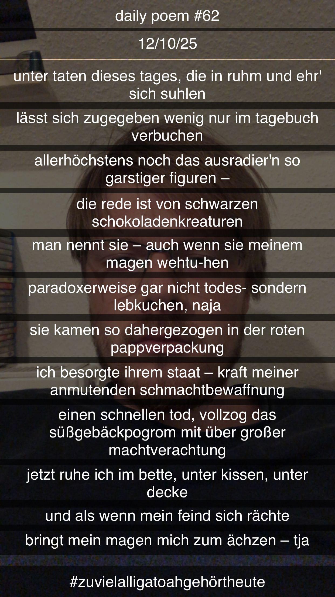

Das Süßgebäckpogrom
Unter Taten dieses Tages, die in Ruhm und Ehr' sich suhlen
Lässt sich, zugegeben, wenig nur im Tagebuch verbuchen;
Allerhöchstens noch das Ausradier'n so garstiger Figuren –
Die Rede ist von schwarzen Schokoladenkreaturen;
Man nennt sie – auch wenn sie meinem Magen wehtu-hen –
Paradoxerweise gar nicht Todes-, sondern Lebkuchen... Na ja,
Sie kamen so dahergezogen, in der roten Pappverpackung,
Ich besorgte ihrem Staat – kraft meiner anmutenden Schmachtbewaffnung –
Einen schnellen Tod, vollzog das Süßgebäckpogrom mit übergroßer Machtverachtung;
Jetzt ruhe ich im Bette, unter Kissen, unter Decke,
Und als wenn mein Feind sich rächte,
Bringt mein Magen mich zum ächzen!
Tja...
